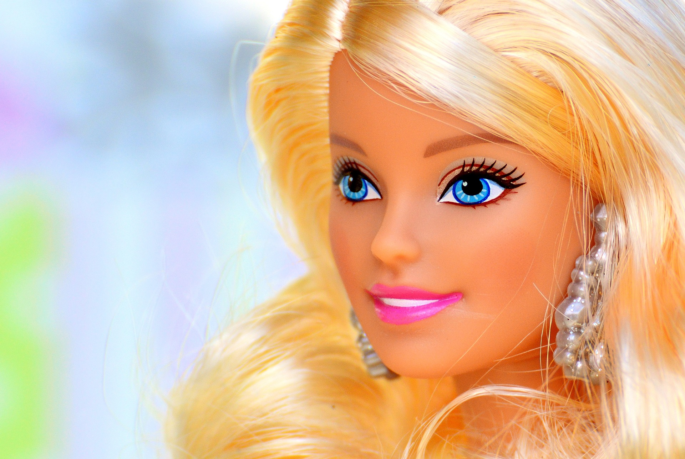

L'histoire de Barbie
Barbie a été créée en 1959 par Ruth Handler, cofondatrice de Mattel, aux États-Unis.
Son idée était d’offrir aux petites filles une poupée qui leur permettrait d’imaginer leur avenir autrement qu’en jouant à la maman.
- Date de création : 9 mars 1959
- Créatrice : Ruth Handler
- Entreprise : Mattel
- Première apparition : Foire du jouet de New York
Depuis, Barbie est devenue une icône mondiale, symbole de mode, d’ambition et d’indépendance.
Elle a exercé plus de 200 métiers, voyagé dans l’espace, et inspiré des générations entières !
Retour à l'accueil